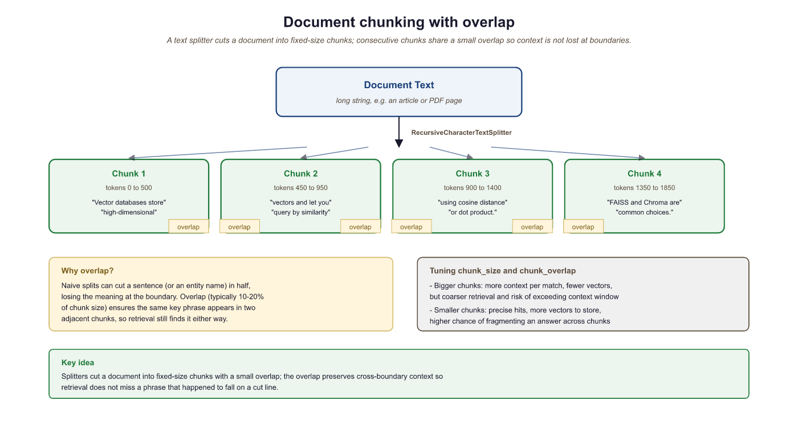

Retrieval-Augmented Generation (RAG) is one of the most practical LLM patterns: instead of relying solely on the model's training data, you retrieve relevant documents at query time and include them in the prompt. LangChain provides a complete pipeline for this workflow: document loaders ingest data from diverse sources, text splitters break documents into chunks suitable for embedding, and retrievers find the most relevant chunks for a given query.
1. Document Loaders
A document loader reads data from a source and returns a list of Document objects. Each Document has two attributes: page_content (the text) and metadata (a dictionary of source information such as file name, page number, or URL). LangChain provides loaders for hundreds of formats and sources. The most commonly used ones cover PDFs, web pages, CSV files, and directories of files.
This example loads documents from three different sources: a PDF file, a web page, and a CSV file.
from langchain_community.document_loaders import (
PyPDFLoader,
WebBaseLoader,
CSVLoader,
DirectoryLoader
)
# Load a PDF (one Document per page)
pdf_loader = PyPDFLoader("reports/annual_report.pdf")
pdf_docs = pdf_loader.load()
print(f"PDF pages: {len(pdf_docs)}")
print(f"First page metadata: {pdf_docs[0].metadata}")
# {'source': 'reports/annual_report.pdf', 'page': 0}
# Load a web page
web_loader = WebBaseLoader("https://en.wikipedia.org/wiki/Transformer_(deep_learning_architecture)")
web_docs = web_loader.load()
print(f"Web doc length: {len(web_docs[0].page_content)} characters")
# Load a CSV (one Document per row)
csv_loader = CSVLoader("data/products.csv", source_column="product_id")
csv_docs = csv_loader.load()
print(f"CSV rows loaded: {len(csv_docs)}")
print(f"First row: {csv_docs[0].page_content[:100]}")For large directories, use DirectoryLoader with glob patterns: DirectoryLoader("docs/", glob="**/*.md"). You can also pass show_progress=True to display a progress bar during loading. For PDFs requiring OCR, consider UnstructuredPDFLoader with the strategy="ocr_only" option.
Every loader returns the same Document type, which means downstream components (splitters, embeddings, vector stores) work identically regardless of the original data source. You can also combine documents from multiple loaders before splitting.
2. Text Splitters
Raw documents are usually too long to embed as single chunks or to fit in a prompt alongside other context. Text splitters break documents into smaller, overlapping pieces. The overlap ensures that information spanning a chunk boundary is not lost. Choosing the right splitter and chunk size significantly affects retrieval quality.
RecursiveCharacterTextSplitter
The most versatile splitter, RecursiveCharacterTextSplitter, tries to split on natural boundaries (paragraphs, then sentences, then words) before falling back to character-level splitting. It accepts a list of separator characters and tries them in order, preferring splits that produce the most semantically coherent chunks.
from langchain_text_splitters import RecursiveCharacterTextSplitter
splitter = RecursiveCharacterTextSplitter(
chunk_size=500, # Target chunk size in characters
chunk_overlap=50, # Overlap between consecutive chunks
separators=["\n\n", "\n", ". ", " ", ""], # Try these in order
length_function=len
)
# Split a single document
chunks = splitter.split_documents(pdf_docs)
print(f"Original pages: {len(pdf_docs)}, Chunks: {len(chunks)}")
print(f"Chunk 0 length: {len(chunks[0].page_content)} chars")
print(f"Chunk 0 metadata: {chunks[0].metadata}")
# Metadata is preserved from the original documentChoosing Chunk Size
There is no universal "best" chunk size. Smaller chunks (200 to 500 characters) produce more precise retrieval but may lose surrounding context. Larger chunks (1000 to 2000 characters) preserve context but may dilute relevance. A good starting point is 500 to 1000 characters with 10% to 20% overlap. Always evaluate retrieval quality on representative queries when tuning these parameters.
Specialized Splitters
LangChain provides splitters optimized for specific content types. These are more effective than generic character splitting when working with structured or formatted content.
from langchain_text_splitters import (
Language,
RecursiveCharacterTextSplitter,
MarkdownHeaderTextSplitter,
HTMLHeaderTextSplitter
)
# Split Python code along function and class boundaries
python_splitter = RecursiveCharacterTextSplitter.from_language(
language=Language.PYTHON,
chunk_size=1000,
chunk_overlap=100
)
code = """
class DataProcessor:
def __init__(self, config):
self.config = config
def load_data(self, path):
with open(path) as f:
return json.load(f)
def process(self, data):
results = []
for item in data:
results.append(self.transform(item))
return results
"""
code_chunks = python_splitter.split_text(code)
print(f"Code chunks: {len(code_chunks)}")
# Split Markdown by headers (preserves document structure)
md_splitter = MarkdownHeaderTextSplitter(
headers_to_split_on=[
("#", "h1"),
("##", "h2"),
("###", "h3"),
]
)
md_text = "# Intro\nSome text.\n## Methods\nMore text.\n### Details\nFine details."
md_chunks = md_splitter.split_text(md_text)
for chunk in md_chunks:
print(chunk.metadata, chunk.page_content[:50])
3. Vector Store Retrievers
After splitting, chunks are embedded into vectors and stored in a vector database. At query time, the user's question is embedded using the same model, and the vector store returns the chunks whose embeddings are most similar. LangChain wraps this workflow in a retriever interface that any LCEL chain can consume.
This example creates a vector store from document chunks using FAISS (a fast, in-memory similarity search library) and then queries it.
from langchain_openai import OpenAIEmbeddings
from langchain_community.vectorstores import FAISS
from langchain_text_splitters import RecursiveCharacterTextSplitter
from langchain_community.document_loaders import WebBaseLoader
# Load and split
loader = WebBaseLoader("https://python.langchain.com/docs/get_started/introduction")
docs = loader.load()
splitter = RecursiveCharacterTextSplitter(chunk_size=500, chunk_overlap=50)
chunks = splitter.split_documents(docs)
# Embed and store
embeddings = OpenAIEmbeddings(model="text-embedding-3-small")
vectorstore = FAISS.from_documents(chunks, embeddings)
# Convert to a retriever (returns top-k documents)
retriever = vectorstore.as_retriever(
search_type="similarity",
search_kwargs={"k": 4}
)
# Query the retriever
results = retriever.invoke("What is LangChain?")
for doc in results:
print(doc.page_content[:100], "...")
print(f" Source: {doc.metadata.get('source', 'unknown')}\n")FAISS is excellent for prototyping, but for production workloads consider a managed vector database such as Pinecone, Weaviate, Qdrant, or Chroma. Each has a LangChain integration that follows the same VectorStore interface, making migration straightforward.
4. Ensemble Retrievers
A single retrieval method may miss relevant documents. EnsembleRetriever combines results from multiple retrievers using reciprocal rank fusion (RRF). A common pattern is to combine a dense vector retriever (good at semantic similarity) with a sparse BM25 retriever (good at keyword matching).
from langchain.retrievers import EnsembleRetriever
from langchain_community.retrievers import BM25Retriever
# Dense retriever (from vectorstore, as above)
dense_retriever = vectorstore.as_retriever(search_kwargs={"k": 4})
# Sparse retriever (BM25 keyword matching)
bm25_retriever = BM25Retriever.from_documents(chunks)
bm25_retriever.k = 4
# Combine with equal weights
ensemble = EnsembleRetriever(
retrievers=[dense_retriever, bm25_retriever],
weights=[0.5, 0.5]
)
results = ensemble.invoke("How do I install LangChain?")
for doc in results:
print(doc.page_content[:80])5. Contextual Compression
Retrieved chunks often contain irrelevant text alongside the useful passages. Contextual compression uses an LLM (or a smaller model) to extract only the relevant portions of each retrieved document before passing them to the final generation step. This reduces noise in the prompt and improves answer quality.
The following example wraps a retriever with a compressor that extracts only the relevant sentences from each chunk.
from langchain.retrievers import ContextualCompressionRetriever
from langchain.retrievers.document_compressors import LLMChainExtractor
from langchain_openai import ChatOpenAI
compressor_llm = ChatOpenAI(model="gpt-4o-mini", temperature=0)
compressor = LLMChainExtractor.from_llm(compressor_llm)
compressed_retriever = ContextualCompressionRetriever(
base_compressor=compressor,
base_retriever=retriever # The FAISS retriever from earlier
)
results = compressed_retriever.invoke("What are LangChain's core components?")
for doc in results:
# Each document now contains only the relevant extracted text
print(doc.page_content)
print("---")Contextual compression adds an LLM call per retrieved document, which increases latency and cost. For high-throughput applications, consider using a cross-encoder reranker (such as Cohere Rerank or a local cross-encoder model) instead, which scores relevance without generating text.
6. Putting It All Together: A Complete RAG Chain
The following example assembles a full RAG pipeline using LCEL: load documents, split them, store embeddings, retrieve relevant chunks, and generate an answer.
from langchain_openai import ChatOpenAI, OpenAIEmbeddings
from langchain_core.prompts import ChatPromptTemplate
from langchain_core.output_parsers import StrOutputParser
from langchain_core.runnables import RunnablePassthrough
from langchain_community.vectorstores import FAISS
from langchain_text_splitters import RecursiveCharacterTextSplitter
from langchain_community.document_loaders import PyPDFLoader
# 1. Load and split
docs = PyPDFLoader("handbook.pdf").load()
chunks = RecursiveCharacterTextSplitter(
chunk_size=800, chunk_overlap=100
).split_documents(docs)
# 2. Embed and store
vectorstore = FAISS.from_documents(chunks, OpenAIEmbeddings())
retriever = vectorstore.as_retriever(search_kwargs={"k": 5})
# 3. Define the RAG prompt
rag_prompt = ChatPromptTemplate.from_template("""
Answer the question based only on the following context.
If the context does not contain enough information, say so.
Context:
{context}
Question: {question}
Answer:""")
# 4. Helper to format retrieved documents
def format_docs(docs):
return "\n\n".join(doc.page_content for doc in docs)
# 5. Assemble the LCEL chain
rag_chain = (
{"context": retriever | format_docs, "question": RunnablePassthrough()}
| rag_prompt
| ChatOpenAI(model="gpt-4o", temperature=0)
| StrOutputParser()
)
# 6. Query
answer = rag_chain.invoke("What is the company's vacation policy?")
print(answer)The RAG pipeline in LangChain follows a clear pattern: load, split, embed, retrieve, generate. Each step is handled by a pluggable component. Use RecursiveCharacterTextSplitter as your default splitter, experiment with chunk sizes between 500 and 1000 characters, and consider ensemble retrieval or contextual compression when basic similarity search is not precise enough.